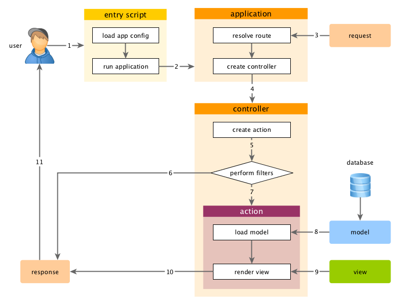

Running Applications ¶
After installing Yii, you have a working Yii application that can be accessed via
the URL http://hostname/basic/web/index.php or http://hostname/index.php, depending
upon your configuration. This section will introduce the application's built-in functionality,
how the code is organized, and how the application handles requests in general.
Info: For simplicity, throughout this "Getting Started" tutorial, it's assumed that you have set
basic/webas the document root of your Web server, and configured, the URL for accessing your application to behttp://hostname/index.phpor something similar. For your needs, please adjust the URLs in our descriptions accordingly.
Functionality ¶
The basic application installed contains four pages:
- The homepage, displayed when you access the URL
http://hostname/index.php, - the "About" page,
- the "Contact" page, which displays a contact form that allows end users to contact you via email,
- and the "Login" page, which displays a login form that can be used to authenticate end users. Try logging in with "admin/admin", and you will find the "Login" main menu item will change to "Logout".
These pages share a common header and footer. The header contains a main menu bar to allow navigation among different pages.
You should also see a toolbar at the bottom of the browser window. This is a useful debugger tool provided by Yii to record and display a lot of debugging information, such as log messages, response statuses, the database queries run, and so on.
Application Structure ¶
The most important directories and files in your application are (assuming the application's root directory is basic):
basic/ application base path
composer.json used by Composer, describes package information
config/ contains application and other configurations
console.php the console application configuration
web.php the Web application configuration
commands/ contains console command classes
controllers/ contains controller classes
models/ contains model classes
runtime/ contains files generated by Yii during runtime, such as logs and cache files
vendor/ contains the installed Composer packages, including the Yii framework itself
views/ contains view files
web/ application Web root, contains Web accessible files
assets/ contains published asset files (javascript and css) by Yii
index.php the entry (or bootstrap) script for the application
yii the Yii console command execution script
In general, the files in the application can be divided into two types: those under basic/web and those
under other directories. The former can be directly accessed via HTTP (i.e., in a browser), while the latter can not and should not be.
Yii implements the model-view-controller (MVC) design pattern,
which is reflected in the above directory organization. The models directory contains all model classes,
the views directory contains all view scripts, and the controllers directory contains
all controller classes.
The following diagram shows the static structure of an application.

Each application has an entry script web/index.php which is the only Web accessible PHP script in the application.
The entry script takes an incoming request and creates an application instance to handle it.
The application resolves the request with the help of its components,
and dispatches the request to the MVC elements. Widgets are used in the views
to help build complex and dynamic user interface elements.
Request Lifecycle ¶
The following diagram shows how an application handles a request.

- A user makes a request to the entry script
web/index.php. - The entry script loads the application configuration and creates an application instance to handle the request.
- The application resolves the requested route with the help of the request application component.
- The application creates a controller instance to handle the request.
- The controller creates an action instance and performs the filters for the action.
- If any filter fails, the action is cancelled.
- If all filters pass, the action is executed.
- The action loads a data model, possibly from a database.
- The action renders a view, providing it with the data model.
- The rendered result is returned to the response application component.
- The response component sends the rendered result to the user's browser.